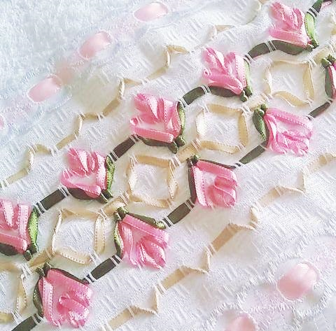
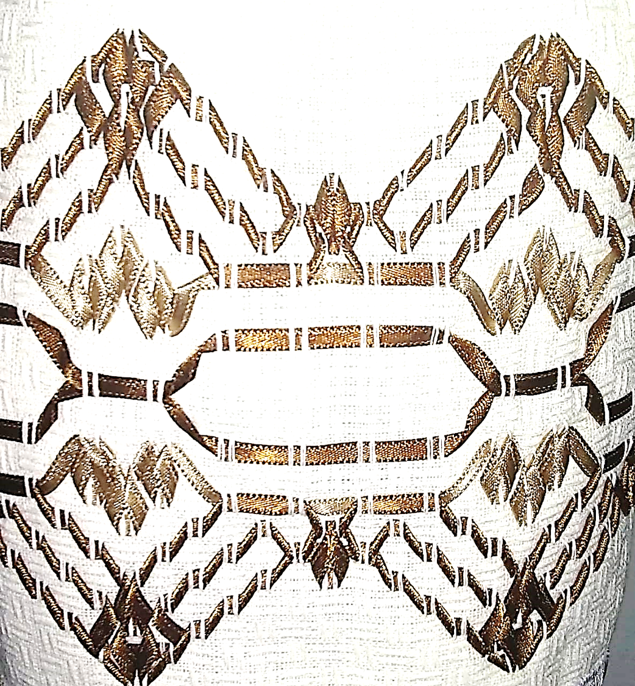
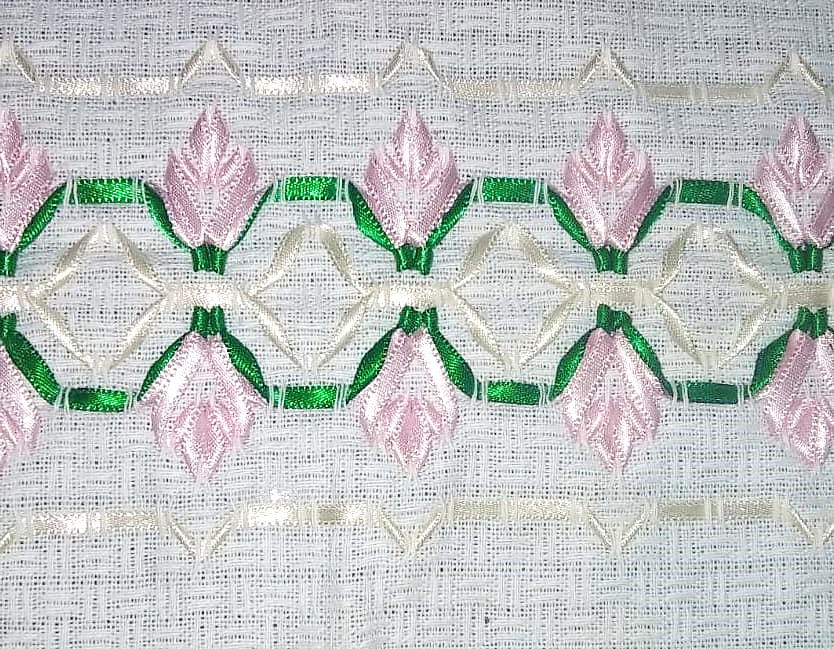
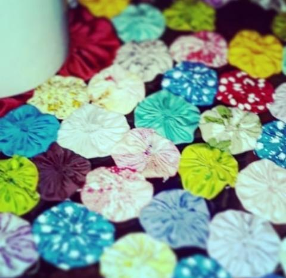

O que é o vagonite?
Vagonite é um estilo de bordado realizado por meio de uma técnica simples e que possui duas características marcantes: o avesso perfeito e desenhos geométricos.
O avesso perfeito significa que o tecido por trás do tecido não mostra nenhum tipo de linha ou costuras, enquanto que as figuras apresentam formatos simétricos, como quadrados ou triãngulos, por exemplo.

Peças disponíveis?



Vamos ao fuxico!

O fuxico é uma técnica artesanal que aproveita retalhos de tecido para formar pequenas trouxas, que são unidas posteriormente.
Atualmente, o fuxico mantém seu status presente na moda tanto em acessórios (bolsas, bijuterias) quanto em roupas de uso popular ou de alta costura